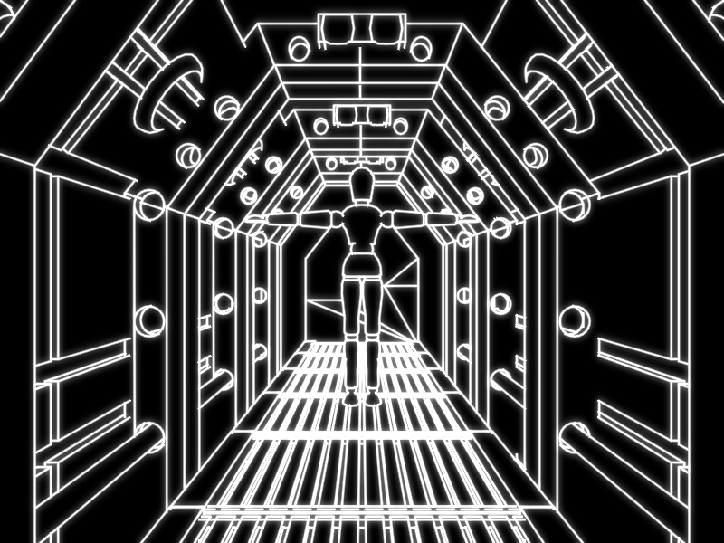
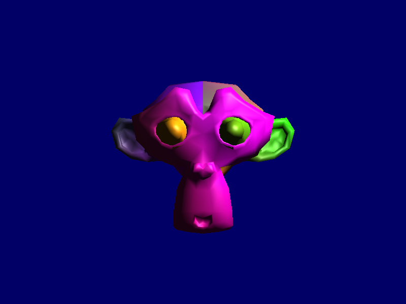

Vector Wireframe Renderer
This project renders 3D geometry as silhouetted wireframe in real-time with a movable camera. The edges are to be rendered to look like they were created by a vector monitor. I was the sole developer of this project and used OpenGL and SDL to handle graphics and windowing. An example screeshot can be seen below.
The rest of this page is mostly a development blog. The final description, a video demo, and screenshots are found at the end. Click the button in "Jump to post" to skip to these sections.
Jump to post
April 18, 2018: Setup
Hello and welcome to my development blog for the final project of Computer Graphics and Interaction (DH2323). In the following posts, I will detail the development process behind the creation of the project.
The goal of the project is to create and document something related to the objectives of the class. This is very open ended giving me a wide array of topics to choose from. As of now, I am not entirely sure what I want to do, but I have a couple ideas that I want to play around with before settling of a project specification.
Before I can work on a prototype for the project, I first needed do some setup. Since we have used SDL for the labs, I choose to use it to handle window creation and input. However, I decided to use the more updated SDL 2 instead of SDL 1 we used in the labs. To help me learn SDL and setup the prototype I used Lazy Foo' Productions SDL Tutorials. For rendering graphics I choose to use OpenGL. Again, as I do not have a lot of experience with OpenGL I setup my environment with the help of an OpenGL tutorial.
For the sake of getting a prototype up and running, I have copied some of the code from these two tutorials into Visual Studios and after some debugging, I was able to write a working framework for my prototype. Currently, it is able to load and render textured OBJ files with shading. I have also implemented rudimentary movement controls for the camera. A screenshot is displayed below.
Once I get a better idea of what I want to do with project, I will refactor the code to get rid of all the global variables and so that the code is completely my own. But first, now that I have something working to talk about, I am setting up this blog. For my next post, I plan to experiment with the shaders and hopefully develop an interesting prototype.
April 21, 2018: The First Prototype
I have started work on making a prototype. The goal of the prototype is to make a wireframe shader that emulates vector monitors. Vector monitors are an old display technology where graphics are rendered via drawing lines as opposed to a grid of pixels as on raster monitors. These monitors where occasionally used in arcade games up until the mid 1980s. These games include Asteroids, Tempest, Star Wars, and Battlezone as pictured here.
The first method I tried was to use glPolygonMode(GL_FRONT_AND_BACK, GL_LINE). It is not a shader in itself, but a rendering option in OpenGL. However, as seen here this makes very thin aliased lines.

April 29, 2018: Refactoring
Quick update here. I have been spending a little time refactoring the code. I abstracted some of the code into several classes so that it will be easier to work with. Additionally, I didn't like how the outer edges of the wireframe were aliased in the previous post. This led to me looking into bloom and finding a tutorial on it. I also looked at other OpenGL topics in the tutorial which helped clean up the code even more.
May 10, 2018: Project Specification
I have completed a submitted the first draft of my project specification. As such, I have committed to project goal. Following is the current version of the specification.
Project Goal
The goal of the project is to render 3D geometry as silhouetted wireframe. The silhouette effect is where only the outer edges of the mesh are drawn in addition a couple other lines that distinguish model features. Additionally, the edges are to be rendered to look like they were created by a vector monitor. With this project, I am aiming for an A or B grade.
Background
There are two key components to this project: the silhouette effect and vector monitor lines. My inspiration for the silhouette effect comes from a PlayStation game called Vib-Ribbon [1]. Although Vib-Ribbon only approximates this effect using at geometry instead of a specially rendered model. A more modern example released during the development of this project is Muffled Warfare [2], which perfectly demonstrates the effect.
The second component is to emulate the look of vector monitors. Vector monitors are an old display technology where graphics are rendered via an electron beam directly drawing lines as opposed to a grid of pixels as on raster monitors. These monitors where occasionally used in arcade games up until the mid 1980s including Asteroids, Tempest, Star Wars [3], and Battlezone [4]. As there are not pixels the output is fairly striking due to the lack of aliasing, especially when compared to contemporary display technologies.
Implementation
For this project I will be using SDL 2 to handle window creation and input, and for rendering graphics I will use OpenGL. The silhouette effect will be accomplished by detecting outline edges in the geometry shader which will then emit quads. The process is similar to an article I found on Silhouette Extraction [5]. Then the fragment shader will then render these lines to emulate the look of a vector monitor. I would also like to experiment with using bloom to create an even greater glowing effect.
Some potential challenges include obtaining and loading models, and figuring out how to detect lines that distinguish the model's features. To help with loading models I could use a library like Assimp. However, the method described above requires adjacency information which means that I will have to extend any model loading routine I find. Additionally, I will have to find models that are conducive to the silhouette effect without becoming a shapeless blob. This might be mitigated if I find a decent algorithm to detect distinguishing edges.
The development process will be documented in a blog which can be found here: https://bbernardoni.com/DGIProject/
Perceptual Study
As the goal of this project is to create convincing representations for 3D geometry under the restrictions of a vector monitor style display, the perceptual study should evaluate the success of the goal. This can be done by letting participants inspect the model and then surveying them about the quality of the rendering effect.
References
[1] Vib-Ribbon. PlayStation, NanaOn-Sha, 1999. Video Demonstration: https://www.youtube.com/watch?v=HhYa1WyeVsE
[2] Muffled Warfare. PC, Gattai Games, 2018. https://www.muffledwarfare.com/
[3] Star Wars. Arcade, Atari, 1983. Video Demonstration: https://www.youtube.com/watch?v=CbqFawQvdGE
[4] Battlezone. Arcade, Atari, 1980. Video Demonstration: https://www.youtube.com/watch?v=zdfKy4c7yuc&t=8m15s
[5] Rideout, Philip. "Silhouette Extraction" The Little Grasshoper. 24 October 2010. [Online]. Available: http://prideout.net/blog/?p=54.
May 11, 2018: Silhouette Effect
Since the last update I have successfully implemented a prototype for the silhouette effect. This was accomplished by modifying the shaders given here. I started by extended the model loading algorithm to generate adjacency information. This is needed by the geometry shader to detect if an edge is an outline edge. The geometry shader was then adapted from the source above. As my code uses the perspective projection, the code had to be modified to account for the perspective divide.
There are several problems with the current implementation. First, to quickly code the model loading extension I used a naive algorithm that has a runtime of O(|V|²) where |V| is the number of vertices. For a simple model of 511 vertices running on my modest laptop, this takes about 4 seconds. I am fairly confident this can be reduced with a better algorithm. Another problem is that the model does not have a closed mesh so not all triangles have three adjacent triangles. Also, as the triangles are not filled in, the depth buffer cannot properly occlude lines behind the model. Finally, There are small gaps where two lines meet.
May 18, 2018: Assimp and Fast Adjacency Generation
My goal this week was to try to use a new model with a closed mesh and to write a better adjacency generation algorithm.
First, I searched the Internet for a new model. I eventually found one that I liked. However, there was a problem. The model used a different file format than my previous model. To fixed this, I decided it was time to use a real model loading library. For this I choose to use Assimp. After building from source and some debugging, I got Assimp to load the old model. But, I encountered a problem when loading the new one. Once I got the model scaled correctly, I could not seem to get the silhouette algorithm to work properly. Even while rendering normally for debugging, the backface culling did not seem to be working. Eventually I discovered that for each outward facing triangle, the model contained a matching inward facing triangle. Hence why backface culling did not work. I did not want to deal with figuring out to deal with this, so instead I found another model.
While debugging the problems with the new models, I also worked on improving the adjacency generation algorithm. In the previous update I used a naive method that took 4 seconds to process the old model. I found a rather simple algorithm that uses a hashtable to generate the adjacency data in O(|V|). This is much faster and only took 100 milliseconds on my laptop, 40 times faster.
With these two changes I was able to generate the image displayed here. Nevertheless, there are still two problems that I discussed in the last post. The silhouettes are not being properly occlude and there are small gaps where two lines meet.
May 21, 2018: Occlusion and Creases
The main object of this update was to get occlusion working for the lines that are supposed to be hidden. The Silhouette Extraction article linked on the May 11th update gives a simple way of doing this. The "Spine Test" referenced was adapted from the paper Two Fast Methods for High-Quality Line Visibility. The process involves rendering the depth buffer of the mesh to a texture and then depth test along the spine of the line using the texture. After a little debugging, the result is mostly what I was looking for. There are a few problems that I will describe later.
The other feature I wanted to add was crease lines. These lines are meant to distinguish where the model has hard edges. To implement this, I simply had to find the angle between normals of the triangles on either side of the edge. If these normals are more than 60 degrees apart, the line will be visible if it is not occluded.
Finally, I fixed the gap issue previous described by adding endcaps to the edges.
After adding these three features, I am getting closer to the intended visualization. The things that are still missing are more faded lines, experimenting with bloom, and possibly creating a better scene. However, as I mentioned before there are two flaws with the current implementation. First, there should really be lines where two meshes intersect. This can be seen where the bottom of the hand meets the wrist in this image. The solution unfortunately is outside the scope of this project as it would require advanced intersection tests to efficiently calculate the intersection paths of the meshes. Second, there are some issues with broken lines which is noticeable in the elbow joint of the picture. This occurs because of issues with Z-fighting in the depth buffer. I have already employed a couple tricks to reduce the frequency of the artifacts but I cannot find any further improvements.
May 23, 2018: Vector Lines and Bloom
Now that most of the correct lines are being properly selected, it is now time to turn my attention to the appearance of the rendered lines. To make the vector lines I simply made the lines bigger and then improved the fragment shader. Now the fragment shader colors each fragment as inversely proportional to the distance to the spine of the line. This effect can be seen in the left half of the image.
Next, I experimented with bloom. I had run some tests earlier, so it was not much work to reenable it. The result is shown in the right half of the image. In the end I decided that bloom does not really add anything and instead just makes the image blurrier. After all the fragment shader accomplishes the same effect of glowing lines, so bloom is just redundant.
I also slightly improved the depth testing since the last update. The new method was inspired by the source code of the Two Fast Methods paper. The actually implementation is quite different but the concepts are the same. There still are issues with Z-fighting but they are slightly reduced.
I forgot to mention this in the project specification but another target of this project was to have the algorithm run in real-time. Running on my relatively lower powered laptop with integrated graphics, the algorithm takes 1.134 milliseconds per frame to render the model in the image. Even if the scene is more complex with many more lines, the algorithm still should be able to run fairly smoothly in real-time.
At this point, my code is mostly complete. It can use some cleaning and refactoring, but it is feature complete. As such I will be focusing on writing the report.
May 25, 2018: Z-Bias
Today is the day that the project is due. As such this will be a short update, so I can get back to finishing the report. While, reviewing the related works I noticed a section about z-biasing. I had tried using this to fix the z-fighting problem before but I could not get it to work properly. It seemed to work close up but didn't occlude anything when far away. Well, I realized that I had tried applying the bias by a constant amount in screen space and clip space but not view space where it should have been. So, after a quick hack, I got z-biasing working properly. There still are some occasional graphical artifacts, but for the most part they were gone. My suspicion is that the last artifacts are due to inopportune edge placements in the model rather than z-fighting.
May 28, 2018: Final Update
The final project has officially been turned in. A couple of days late, since I kept finding small improvements that led to uncovering subtle bugs that take hours of debugging to fix. But after a three days of crunch, it is complete and I can celebrate by taking the rest of the day off... at least after I finish this post. I suppose its fitting since its my birthday anyway.
A lot of things have changed since the last post. So I'll go through each item in turn and them wrap up this post with discussing the final submission.
New model
Probably the most noticeable thing in the picture above is that I introduced a new model. It is a sci-fi themed hallway that I got from here. By introducing a bigger model I found several bugs which I will discuss in the upcoming sections. One simple bug was that I was not handling edges with only one bordering face properly. While generating adjacency data, if a triangle is found to not have an adjacent face on any side an new vertex will be added and its index will be given to complete the adjacency data. If multiple of these border edges are found they will reference the same vertex. Additionally, this vertex is detectable in the geometry shader since it has a very large x position value.
Clipping
The first thing I noticed when loading the hallway is that the long floorboards start behaving weirdly when one half goes behind the camera. I eventually figured out that is was because the point behind the camera has a negative homogeneous w component which messed up later calculations for computing position offsets. To solve this I added a clipping algorithm to clip each edge. I implemented the Cohen-Sutherland algorithm clipping on the six standard homogeneous planes with the help of this article.
Fragment Interpolation
Even after adding clipping, the lines would still behave weirdly. After a long time of debugging, I determined that the some of the variables sent to the vector lines fragment shader were being interpolated incorrectly. This was fixed for one variable by passing the full homogeneous coordinate and performing the perspective divide in the fragment shader and fixed for the other by adding the noperspective qualifier.
Better Bloom
While I was trying to describe how I tried to add bloom and didn't like its effect in the report, I realized I had for got one simple step. After the image was blurred it is added to the original to form the final image. I also added an option to scale the blurred component by a fixed factor. However, a factor of 1 worked the best. After this change, the results were much better. A comparison can be seen in the image where on the left is an 8 pixel half-width rendering without bloom and the right is a 4 pixel half-width rendering with bloom. With bloom the lines seem much smoother and the glow effect is greater.
The only thing I did not like was how applying the Gaussian blur took much longer than the rest of the rendering loop. At first, to increase the blur strength a 9-tap blur was repeated four times. However, I later found out this is nearly equivalent to a 17-tap blur applied once. Then, even further improvement came from the algorithm presented in this article. This method takes advantage of the GPU's texture filtering by sampling between texels to calculate two weights at a time. Now, only one iteration of a 9-tap filter is needed to achieve the same results. In the end, adding bloom only takes 1.99 milliseconds per frame.
Final Submission
The final project submission includes the project report, project specification, code, binary executable, screenshots (all over this blog), and a video demonstration (see below). In the report I cover a lot of the same information found in this blog. Although there are a few additional things I'll discuss below.
Timing Analysis
A target of this project was to have the application function in real-time. We can analyze this by testing frame rate. Using my relatively lower powered laptop with integrated graphics, the algorithm runs at 241.0 frames per second to render two test model of 2956 (dummy) and 6595 (hallway) vertices seen in the image at the top of this post. This equates to 4.15 milliseconds per frame where 1.99 milliseconds come from the bloom step which is constant for a given screen resolution. Another timing test shows that one, two, and three dummies take 3.154, 3.294, and 3.457 milliseconds per frame (= 317.1, 303.5, and 289.2 fps) respectively to render. This suggests that the method scales linearly with scene complexity. Even with a more complex scene comprised of more lines, the algorithm still should be able to run smoothly in real-time especially with better hardware.
Perceptual Study
As part of this project, I needed to give a description of a potential perceptual study. As the goal of this project was to create convincing representations for 3D geometry, a perceptual study should evaluate the effectiveness of the vector line representations. One possible method would be to test participants on their ability to identify objects while varying the rendering algorithm. This would provide incite as to how recognizable vector line images are. More detail about the study design can be found in the report.
Future Work
Also for the report, I proposed several possible extensions to this project. As the lines are constant width, a model that is far away will seem cramped like the model on the left side on this image. The model could be displayed more sparsely by selecting edges more restrictively.
The test models used for this project were conducive towards the application of the algorithm. However, other models will not have as many distinguishing lines. This could be solved by implementing some of the other lines described by Al-Rousan et al. Edges can also be drawn at lines of intersecting geometry as exhibited where the hand meets the wrist on the right side of the image. The solution unfortunately is outside the scope of this project as it would require advanced intersection tests to efficiently calculate the intersection paths of the meshes.
Since the edges are taken directly from the underlying models, curved lines appear jagged. A method for smoothing these paths like presented in Wang et al. could be applied.
For the most part the overdraw method hides the gaps between edges. But, at T-intersections of lines the overdrawn part will stick out as seen in the top of the wrist.
Finally, in the current implementation all the lines are pure white. Instead the scene could be made more interesting by varying color and brightness. Even basic shading would be possible.
Video Demonstration and Screenshots
Finally, I will close this post with the video demo and some screenshots.